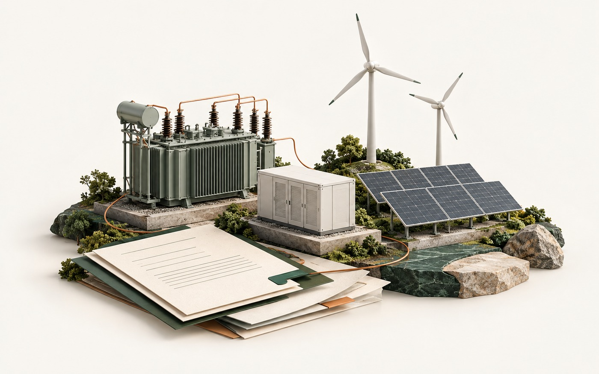
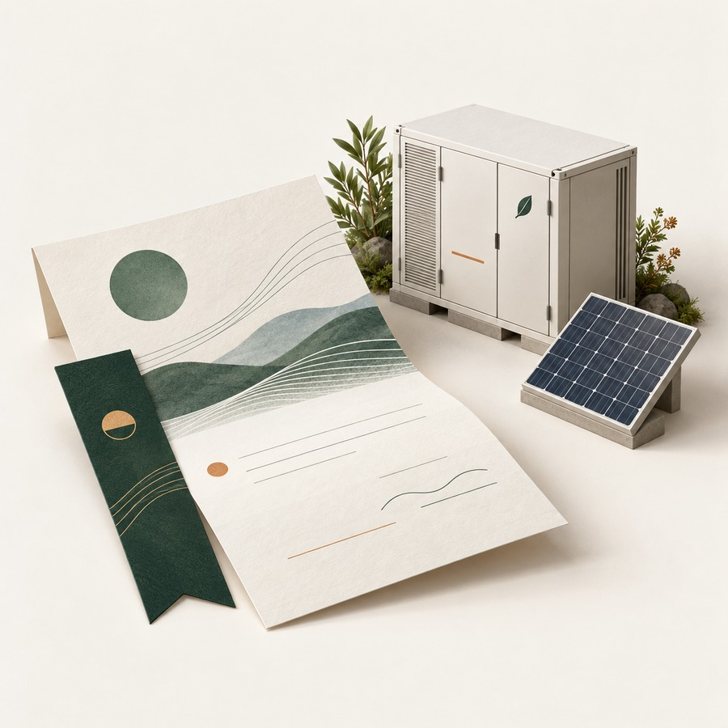
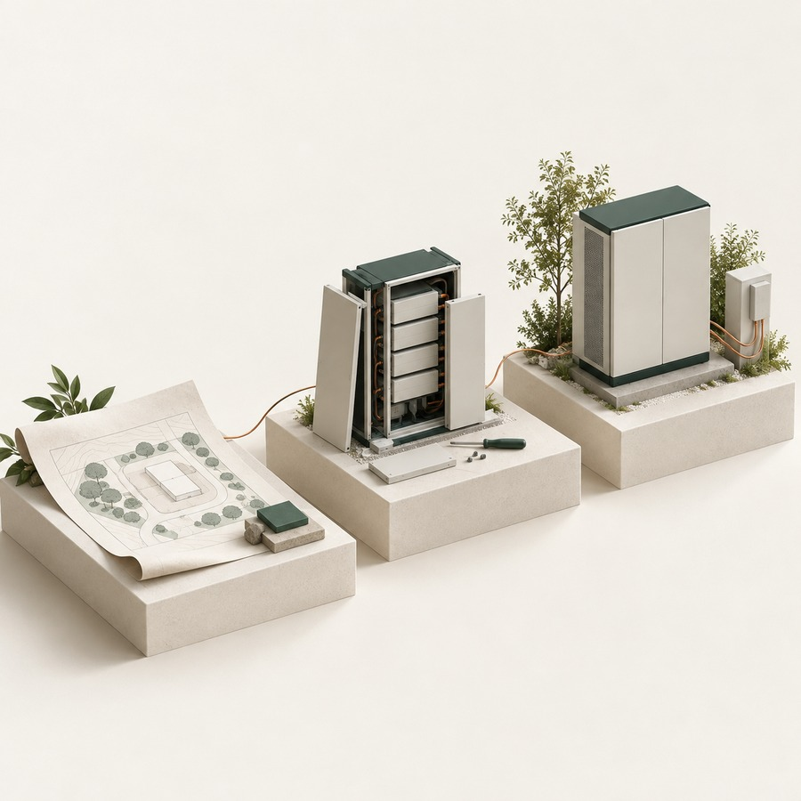
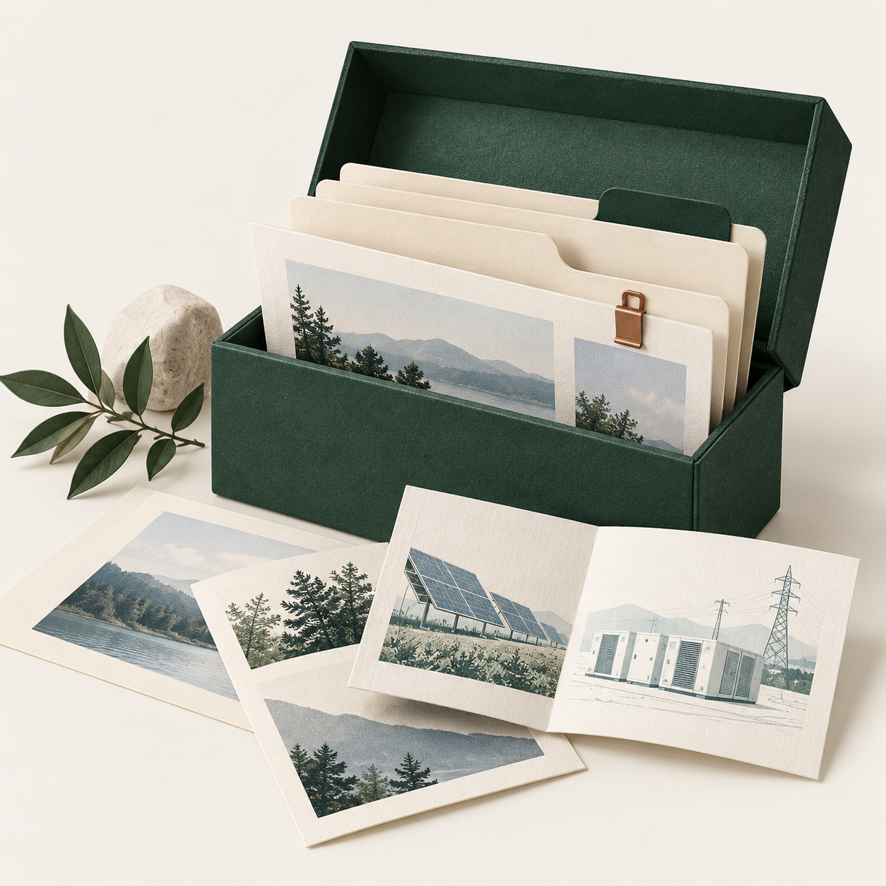

从一条消息，读到来龙去脉。
同一条变化，可以按三种方式进入：先看动态，再回到事件，需要背景时再去资料里核对时间。



动态
先知道，发生了什么。
按能源赛道和内容类型读动态，保留出处，方便继续核对。
虚构结构示意
一件事，怎样继续追？
三个阶段对应同一条线索的不同阶段：先看计划，再对进展，最后核对建成、并网与投运。
计划：先看范围与目标。
演示只使用本页固定材料，不请求资讯接口，也不代表真实项目更新。
本地阅读框架里，有这几处入口。
持续资讯与事件是主线，每日回顾帮助阶段性回看。
这些入口介绍的是本地阅读框架，本页不提供后台或在线搜索。
持续完善，也保留回看的依据。
阅读框架已搭建，内容覆盖、及时性、事件组织与连续运行仍在完善。目前先分享项目方法与进展。
阶段：本地试运行，尚未对外上线
已经有的
资讯、事件、精选、焦点、每日回顾与资料检索的本地框架。
正在完善
内容覆盖、及时性、相关性判断、事件归组与连续运行。
对外状态
介绍页公开不等于产品上线：暂不提供体验、注册与订阅入口。
-
相关链接
写作 skill 介绍查看完整地址
https://ai.run-linux.com/s/mjrGbzjPHs7pAN_1fSdMGA -
相关链接
泽法官网查看完整地址
https://zefainfo.cn/
在微信等宿主内，外链可能被限制跳转；可展开完整地址后手动复制到浏览器打开。
阅读原则、分类与常见问题。
主阅读区只留必要说明，详细内容按需展开。
阅读与编辑原则
- 保留出处。区分“来源这样说”与“已独立核实”。
- 单条不等同于事件。一条报道与围绕同一件事的一组报道，是两种阅读单位。
- 时间分开记。发布时间、收录时间与编辑更新时间分别对待，不合并成模糊的“最新”。
- 历史不冒充新增。旧材料重新进入视野，仍按原日期标注。
- 渠道不等于独立证据。同一发布主体的多个渠道不当作多份证据。
- 摘要只是入口。重要事实回到原始资料核对。
这些是编辑上的要求，不代表已实现全自动、零差错核验。
领域与内容类型
领域：电力电网、油气、煤炭、风光、水电、储能、核能聚变、氢能与其他低碳技术、AI 与能源、综合能源。
内容类型：政策监管、市场数据、项目进展、企业资本、技术研究、产品设备、采购招标、分析观点、方法解读。
这些是本地导航里已有的分类，不代表各领域供给都已丰富稳定。
常见问题
现在可以注册或在线使用吗？
目前为本地试运行，本页只介绍方法与进展，不提供公开使用入口，也没有注册或订阅功能。
资讯和事件有什么区别？
资讯是一条材料；事件围绕同一件正在发生的事，把相关报道组织起来便于看后续。事件关系与归组质量仍在持续校准。
每日回顾与持续更新是什么关系？
持续资讯与事件是主线，每日回顾只是阶段性汇总，不是覆盖全天全网的完整结论，也不承诺固定更新频率。
怎样查原始出处？
每条内容都尽量保留来源，重要判断应回到原始材料核对；热点程度与真实性、法律效力、投资价值无关。
边界说明
- EnergyHot 是能源产业资讯与事件项目；持续阅读是主线，日报／每日回顾是补充。
- 目前为本地试运行，本页公开不代表产品已对外上线。
- 阅读模块存在，不等于供给、及时性、归组质量与长期运行已全部验收。
- 背景资料保留原日期；热度不代表真实性、法律效力或投资价值。
- 页面插图为概念插画，不是真实项目照片或产品截图。
本页为静态介绍，不联网抓取新闻，也不收集读者输入。